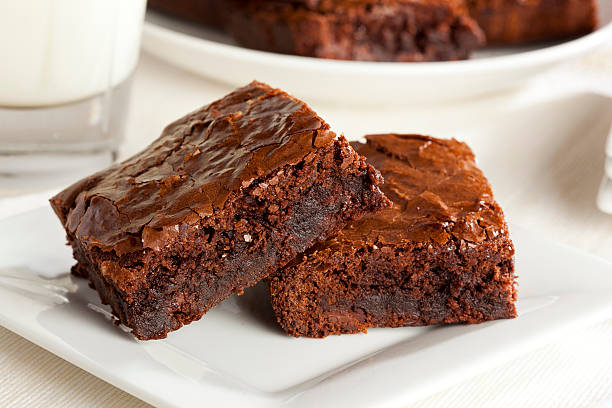

Home
Bake em Brownies!

Thick and fudgy brownies..
Ingredients
- All-purpose flour 1 cup
- Unsweetened cocoa powder 1/2 cup
- Butter 1/2 cup (melted)
- Sugar 1 cup
- Brown sugar 1/2 cup
- Eggs 2
- Vanilla extract 1 tsp
- Salt 1/4 tsp
- Baking powder 1/2 tsp
- Chocolate chips 1/2 cup
Steps:
-
Prepare the Batter: In a bowl, whisk melted butter, sugar, and
brown sugar until smooth. Add eggs and vanilla extract and mix well.
-
Mix Dry Ingredients: Sift together flour, cocoa powder, salt, and
baking powder in a separate bowl.
-
Combine: Gradually fold the dry ingredients into the wet mixture
until just combined. Do not over mix. Stir in chocolate chips.
-
Prepare the Pan: Grease a baking pan or line it with parchment
paper. Pour the batter evenly into the pan.
-
Bake: Bake in a preheated oven at 180°C (350°F) for 20-25
minutes, or until a toothpick inserted comes out with moist crumbs.
-
Cool & Serve: Allow brownies to cool completely before slicing
for the best fudgy texture.